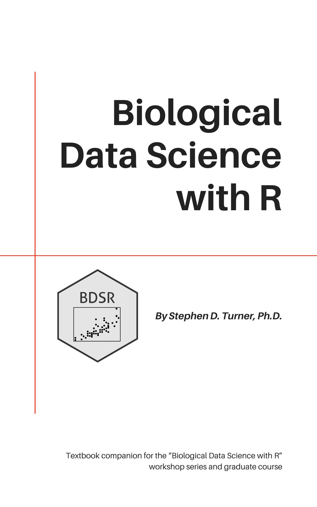

Biological Data Science with R
Preface

This book was written as a companion to a series of courses I taught at the University of Virginia introducing the essentials of biological data science with R:
- UVA Biomedical Sciences Graduate Program BIMS8382: bims8382.github.io.
- UVA Health Sciences Library Biological Data Science Workshops: stephenturner.github.io/workshops.
- UVA Translational Health Research Institute of Virginia (THRIV) Scholars program Biological Data Science course: thriv.github.io.
While this book was written with the accompanying live instruction in mind, this book can be used as a self-contained self study guide for quickly learning the essentials need to get started with R. The BDSR book and accompanying course introduces methods, tools, and software for reproducibly managing, manipulating, analyzing, and visualizing large-scale biological data using the R statistical computing environment. This book also covers essential statistical analysis, and advanced topics including survival analysis, predictive modeling, forecasting, and text mining.
This is not a “Tool X” or “Software Y” book. I want you to take away from this book and accompanying course the ability to use an extremely powerful scientific computing environment (R) to do many of the things that you’ll do across study designs and disciplines – managing, manipulating, visualizing, and analyzing large, sometimes high-dimensional data. Regardless of your specific discipline you’ll need the same computational know-how and data literacy to do the same kinds of basic tasks in each. This book might show you how to use specific tools here and there (e.g., DESeq2 for RNA-seq analysis (Love, Huber, and Anders 2014), ggtree for drawing phylogenetic trees (Yu et al. 2017), etc.), but these are not important – you probably won’t be using the same specific software or methods 10 years from now, but you’ll still use the same underlying data and computational foundation. That is the point of this series – to arm you with a basic foundation, and more importantly, to enable you to figure out how to use this tool or that tool on your own, when you need to.
This is not a statistics book. There is a short chapter on essential statistics using R in Chapter 8 but this short chapter offers neither a comprehensive background on underlying theory nor in-depth coverage of implementation strategies using R. Some general knowledge of statistics and study design is helpful, but isn’t required for going through this book or taking the accompanying course.
There are no prerequisites to this book or the accompanying course. However, each chapter involves lots of hands-on practice coding, and you’ll need to download and install required softwar and download required data. See the setup instructions in Appendix A.
Acknowledgements
This book is partially adapted from material developed from the courses I taught above, some co-taught with VP (Pete) Nagraj, from 2015-2019. The material for this course was adapted from and/or inspired by Jenny Bryan’s STAT545 course at UBC (Bryan 2019), Software Carpentry (Wilson 2014) and Data Carpentry (Teal et al. 2015) courses, David Robinson’s Variance Explained blog (Robinson 2015), the ggtree vignettes (Yu 2022) Tidy Text Mining with R (Silge and Robinson 2017), and likely many others.